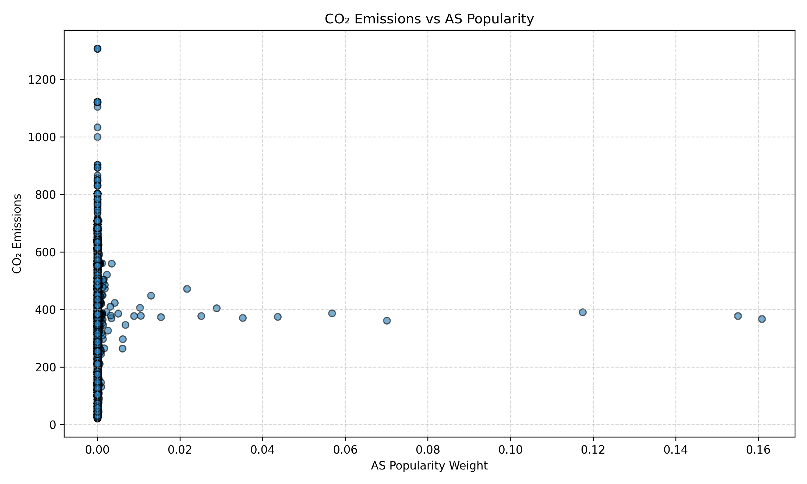
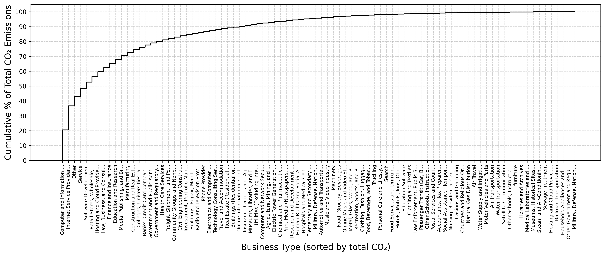

AS Emissions Table
| ASN | Organization | CO₂ Emissions |
|---|
AS Link Emissions
| AS1 | AS2 | Total CO₂ |
|---|
CO₂ Emission Visualizations
Interactive Scatter Plot
Interactive Donut Pie Chart
Distribution of CO₂ Intensity Across AS Popularity Groups
CO₂ Emissions vs AS Popularity

Customer Cone Size vs CO₂ Intensity
CO₂ Emission CDF (Cumulative Distribution)
